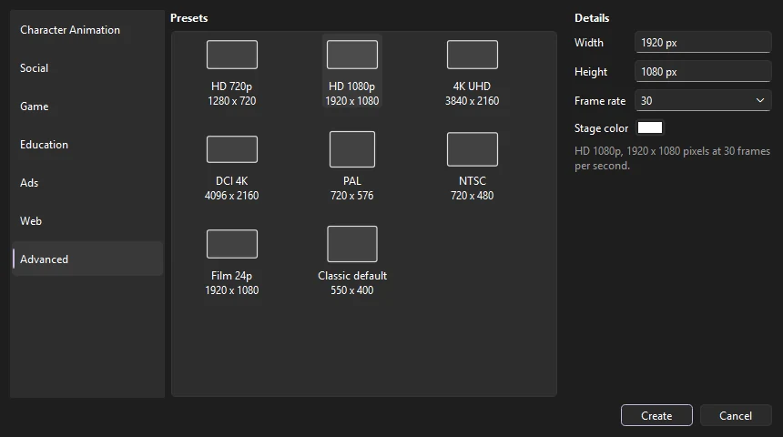
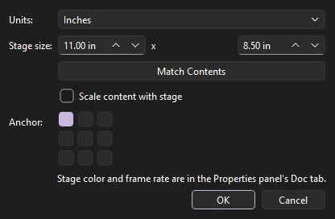

Workspace
Documents and files
A document holds your stage settings, timelines, library and media. This page covers creating one, the file formats Phoenix reads and writes, bringing in images, sound and video, and getting work back after a crash.
Create a document
Choose (Ctrl+N). Pick a category on the left, then a preset. The details on the right fill in from the preset, and you can change any of them.

| Category | Presets for |
|---|---|
| Character Animation | Full HD, HD, 4K, standard and widescreen video at 24 fps |
| Social | Instagram post and story, Twitter, Facebook, YouTube and TikTok, at 30 fps |
| Game | Full HD and HD at 30 fps; phone (landscape and portrait) and tablet at 60 fps |
| Education | Full HD, HD, 1024×768 and tablet, at 30 fps |
| Ads | Standard banner sizes, from a 320×50 mobile banner to a 970×250 billboard, at 24 fps |
| Web | Full screen, desktop, laptop, tablet and phone, at 30 fps |
| Advanced | Broadcast and film formats: HD, 4K UHD, DCI 4K, PAL, NTSC, 23.976 fps film, and the classic 550×400 default |
Width and height can be from 1 to 8192 pixels. The frame rate list runs from 8 to 120 fps and includes the broadcast rates 23.976, 29.97 and 59.94; you can also type any rate up to 120. Platform is what the document's scripts are written in: ActionScript 3.0, or HTML5 Canvas for JavaScript with CreateJS's API (see HTML5 Canvas JavaScript); the Document Info in the Properties panel shows which a document is. Phoenix remembers your last choice and opens on it next time.
Document settings
To change the settings of an open document, click an empty part of the stage with the Selection tool so the Properties panel shows the Doc tab.

- W and H
- The stage size in pixels.
- FPS
- Frames per second, from 0.01 to 120.
- Stage
- The background color of the stage, which also becomes the background of exported images and video. Give it less than full alpha to make the stage see-through: a checkerboard shows under it, and images and PNG sequences exported on the stage color keep that transparency. The FLA format keeps only the color; Phoenix saves the alpha as a setting of its own.
- Scale spans
- When this is on, changing the frame rate stretches or squeezes every span so animation keeps its timing in seconds. When it is off, each frame keeps its place and the animation plays faster or slower.
- Document Info
- Below the settings: the FLA version the document was saved as, and the app that made it.
The tab also shows which application and file version last saved the document.
(Ctrl+J) has more:
- Units
- What the rulers count in: pixels, inches, points, centimeters or millimeters. The stage size is shown in the same units.
- Stage size
- The width and height of the stage.
- Match Contents
- Sizes the stage to fit everything on it, in every frame of every scene, and moves the artwork so it starts at the stage's top-left corner.
- Scale content with stage
- When the size changes, everything on the stage grows or shrinks with it, so a scene made for one size fits another.
- Anchor
- When the size changes and the content does not scale, which part of the stage the artwork keeps to: a corner, an edge's middle or the center. The stage grows or shrinks away from it.
Scenes
A document can hold several scenes, which play one after another. The stage and timeline show one scene at a time; its name is in the edit bar above the stage.
Open (Shift+F2) to work with them:
- Click a scene to edit it. Shift+Page Up and Shift+Page Down go to the previous and next scene.
- Add puts a new, empty scene after the current one (or choose ). Duplicate copies the current scene with all its layers and frames.
- Drag scenes to change the order they play in, and double-click one to rename it. Scene names must be different from each other.
- Delete removes the current scene, after asking. A document keeps at least one.
Each change is one step you can undo.
Open and save
| Command | Shortcut |
|---|---|
| Ctrl+O | |
| The last ten files | |
| Ctrl+S | |
| Ctrl+Shift+S | |
| Goes back to the saved file, dropping the changes since | |
| Ctrl+W | |
| Ctrl+Q |
The window title shows the document's full path, with a * after it when there are unsaved changes. Before closing a changed document, Phoenix asks whether to Save, Discard the changes, or Cancel.
Several documents
Each document you open or create gets a tab over the stage, so you can keep several open and copy between them. Click a tab to switch; Ctrl+Tab goes to the next and Ctrl+Shift+Tab to the previous. Each tab keeps its own undo history, playhead, zoom and scroll, and unsaved changes, marked with a *. Every panel shows the document whose tab is in front, and switching tabs stops playback. Drag tabs to reorder them, and click a tab's × or press Ctrl+W to close it. Opening a file that is already open switches to its tab, in whichever window it is. A blank new document you have not changed is replaced by the next file you open.
Right-click a tab for more:
- Close, Close Others, Close All
- Close that tab, every other tab, or all of them. Phoenix asks about any with unsaved changes first.
- Copy Path
- Puts the document's file path on the clipboard.
- Show in Explorer (Reveal in Finder on macOS)
- Opens the folder the file is in, with the file selected.
- Move to New Window
- Opens the document in a window of its own, with its own stage, timeline and panels, so two documents can sit side by side or on two screens. Its undo history, playhead and view go with it. You can also drag a tab off the tab bar and let go anywhere outside it.
- Move to Window
- Moves the document into another Phoenix window as a tab. Dragging a tab onto another window's tab bar does the same. A window closes by itself when its last document moves out.
To keep your work light, a document waiting in a tab lets go of the bitmaps and sounds it has read from its file, and reads them again when you come back to it.
Copying between documents
Copy and paste work between tabs and windows. When what you paste uses symbols, bitmaps or sounds from the other document's library, they come along with everything they use in turn, nested symbols included, as one step you can undo. The same happens when you copy frames, when you drag an item from one window's Library onto another window's stage or Library, and when you copy library items and paste them into another library. If the library already has items with the same names, Phoenix asks what to do:
- Don't replace existing items
- The library's own items are kept, and what you paste uses them.
- Replace existing items
- The library's items take the copies' contents, and everything that uses them shows the copies.
- Keep both
- The copies come in under new names (
Head copy), and what you paste uses those.
Closing and quitting
Closing a tab with unsaved changes asks whether to save it. When you quit (, which closes every window) or close a window with several unsaved documents, Phoenix asks once: Save All, Discard All, Review Each... to be asked about each document in turn, or Cancel. Closing one of several windows leaves the others open.
The next time Phoenix starts, it opens the saved documents that were open when you quit, each in its tab, with the one you were looking at in front. Documents never saved are not reopened; save them or they are left behind. To start with nothing open instead, turn off Reopen documents from last time in .
Templates
To start new documents from one you have set up (a stage size, a layer structure, a character), choose and give it a name. then opens an untitled copy of it, so the template itself is never changed.
A document that uses Phoenix's own features, such as textured brushes, linked palettes or effect layers, keeps them when saved as FLA or XFL: Phoenix writes them in a form it reads back. Other FLA editors show the document without them and drop them if they save it, so Phoenix lists them and asks before such a save. Don't ask again for this document skips the question until Phoenix closes.
Saves are safe: Phoenix writes an FLA or Phoenix document to a temporary file and only replaces the original once the new file is complete, so a crash or full disk in the middle of a save cannot damage your file.
looks through the document for damage, lists errors and warnings, and offers Repair for what can be repaired. shows what changed between this document and another version of it; see Version control.
File formats
| Format | Open | Save | Notes |
|---|---|---|---|
Phoenix document (.phx) | Yes | Yes | The default for new documents. See below. |
FLA file (.fla) | Yes | Yes | The zipped FLA format, from CS5 to the current version. |
| XFL folder | Yes | Yes | The uncompressed form of an FLA. Open its .xfl file or its DOMDocument.xml. |
Binary FLA (.fla) | Yes | As FLA, XFL or PHX | The format before CS5: versions MX 2004, 8, CS3 and CS4, converted when opened. See below. |
SWF movie (.swf) | Yes | As FLA, XFL or PHX; exported | A published movie brought back as a document, for when the FLA is lost. See below. |
Working with FLA files
Phoenix is built to round-trip FLA files. When you open an FLA and save it again, Phoenix keeps everything it found, including settings and data it does not use itself, such as scripts, so the saved file opens elsewhere as it did before. TLF text in older files opens as classic text you can edit; see Text.
Some things Phoenix can do have no place in an FLA. If saving as FLA or XFL would leave something out, Phoenix tells you what before it writes, so nothing is lost silently.
To see what an FLA would hold, choose . The Document Source window shows the document's DOMDocument.xml as Phoenix would write it if you saved now. It is read-only.
FLA files saved before CS5 use a binary format that Phoenix converts when it opens them. Versions MX 2004, 8 and CS3 open in full, with their layers, classic and shape tweens, symbols, bitmaps (on the stage too), static text and sounds. CS4 files can open with parts missing: drawing objects in them cannot be read yet. When part of a file cannot be read, Phoenix opens the rest and lists what is missing. An embedded video keeps only the name of the file it came from. Files older than MX 2004 do not open.
Phoenix saves only the current format, which the old versions cannot open, so Save on a converted file asks first: Save As... to keep the original, or Replace.
Opening SWF movies
When only the published .swf of a piece survives, open it with to bring it back as a document you can edit and save as FLA. Phoenix reads:
- The stage size, frame rate and background color.
- Shapes with their solid, gradient and bitmap fills and their strokes. A shape the movie shows only once goes on the stage as a shape; one it shows again and again becomes a graphic symbol.
- Movie clips and buttons as symbols. The main timeline and each symbol get a layer for each depth of the movie, with a keyframe wherever what is at that depth changes. Instance names, color effects, filters and blend modes come back; masks come back as mask layers.
- Scenes, by the names the movie kept for them, and frame labels, on a layer of their own.
- Bitmaps, including JPEGs with transparency, in the library.
- Sounds: those started on a frame, on their own layers, and the streamed soundtrack, on a Soundtrack layer.
- Text. Static text comes back as the outlines of its letters, and dynamic and input text as text fields.
- 9-slice grids, and the names a movie exported its symbols under, which become the symbols' names and classes.
A movie holds the finished frames, not how they were made, so some things cannot come back. Where a symbol moves, turns, scales or changes color evenly or with an ease, or a shape morphs steadily, Phoenix rebuilds the classic or shape tween; other motion comes back as a keyframe on every frame. Layer names and library folders are lost, and so are symbol names unless the movie exported them, so Phoenix names layers after their instance names or depths, and symbols by kind and number. Scripts were compiled when the movie was published and cannot be turned back into source, so a frame that had one gets a comment saying so. When Phoenix opens a movie, it tells you what it left out (video, for example).
The document has no file yet: Save asks where to save it, so the movie itself is never replaced.
The Phoenix format
Phoenix documents (.phx) are Phoenix's own format. They hold everything an FLA can, so you can always export a .phx back to the same FLA, and they leave room for features FLA cannot store.
- Fast. A
.phxtypically opens several times faster than the same FLA. - Media kept as is. Images, sounds, video and fonts are stored in their original formats, each stored once even if used many times, and loaded only when needed.
- Robust. Each part of the file is checksummed, so damage to one part does not take the whole file with it.
- Compatible. An older Phoenix opens files from a newer one and keeps any data it does not understand. If a newer feature would change how something looks, the older version opens the file read-only and tells you what is missing.
- Previewable. Each file carries a thumbnail of its first frame.
New documents are saved as .phx unless you choose otherwise under : Phoenix Document, FLA File, or XFL Folder, which suits a studio keeping its files in version control. A new document's first Save As starts in that format.
To convert files without opening them, see the --convert option.
Import
To bring artwork, sound and video into a document, use : Import to Stage... (Ctrl+R) adds files to the library and places them on the current frame, Import to Library... adds them to the library only, and Open External Library... (Ctrl+Shift+O) opens another document's library to copy items from. You can also drag files onto the window or paste from other applications.
| Kind | Formats |
|---|---|
| Images | PNG, JPEG, GIF, BMP, and numbered image sequences |
| Layered images | Photoshop (PSD and PSB), a layer for each Photoshop layer |
| Vector artwork | SVG, Illustrator (AI), EPS and PostScript, PDF, with editable paths, gradients and text |
| Documents and movies | FLA, XFL, SWF |
| Sound | WAV, AIFF, MP3, FLAC, Ogg |
| Video (reference) | MP4, MOV, M4V, AVI, MKV, WebM, FLV, WMV, MPEG |
What each format brings in, Trace Bitmap, and the bitmap commands (Swap Bitmap, Break Apart, Bitmap Properties, Update and Edit With) are described in Importing artwork; for tracing, see Trace Bitmap.
Auto-save and recovery
While a document has unsaved changes, Phoenix writes a recovery copy in the background, for every document open, in a tab in front or not. It never touches your own file. Choose how often under : every minute, every 2 (the default), 5 or 10 minutes, or off.
If Phoenix closes without saving, for example after a crash or power cut, the next time it starts the Recover Unsaved Work dialog lists every recovery copy, newest first, with the document's name and when the copy was made:
- Recover
- Opens the selected copies, each in a tab of its own, as the documents they came from, unsaved. Save them to keep them. Any copies not selected are offered again next time.
- Discard
- Deletes the selected copies.
- Discard All
- Deletes every copy, after asking.
- Later
- Keeps the copies and asks again next time.